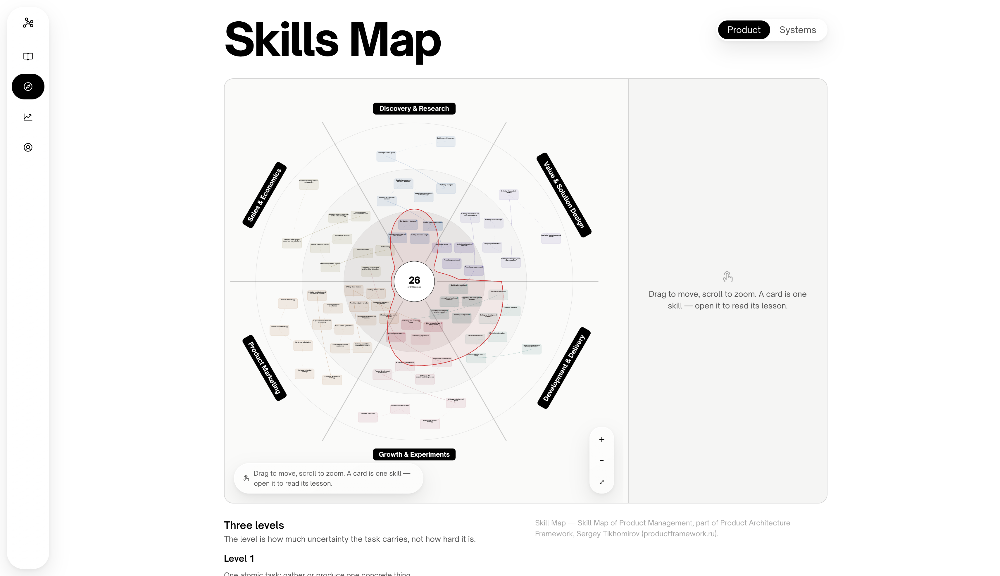

PM Thinking Coach
A tool for people entering product management from zero. A comprehensive skill map covering both product management and system design, helping you assess your competencies, identify knowledge gaps, and structure your skills. Short lessons explain key concepts, while practical exercises and real-world business simulations help you develop the mindset and problem-solving skills of a product manager